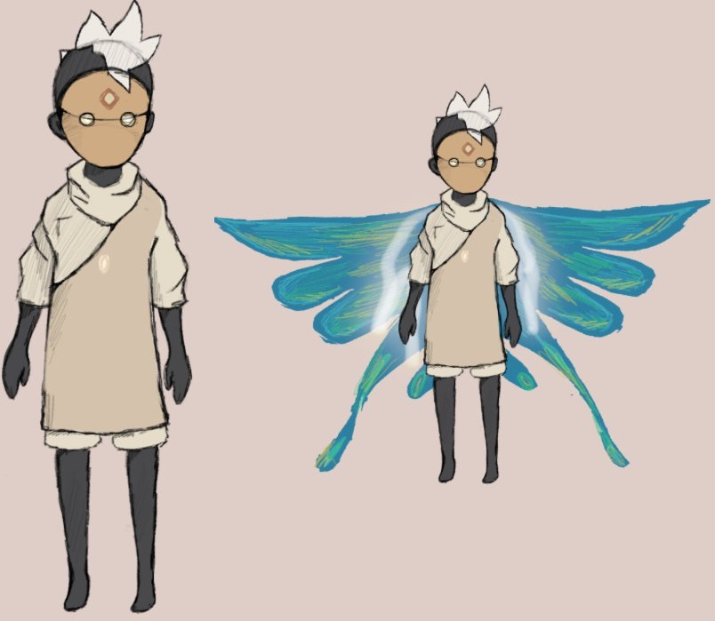
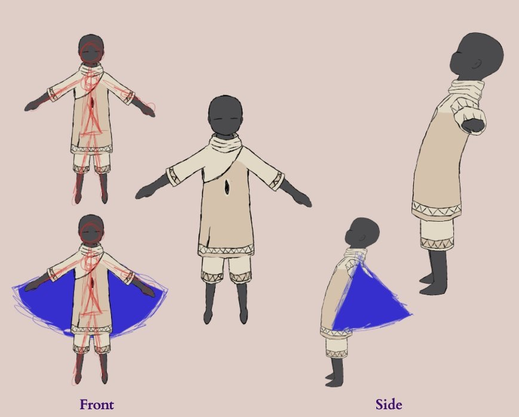
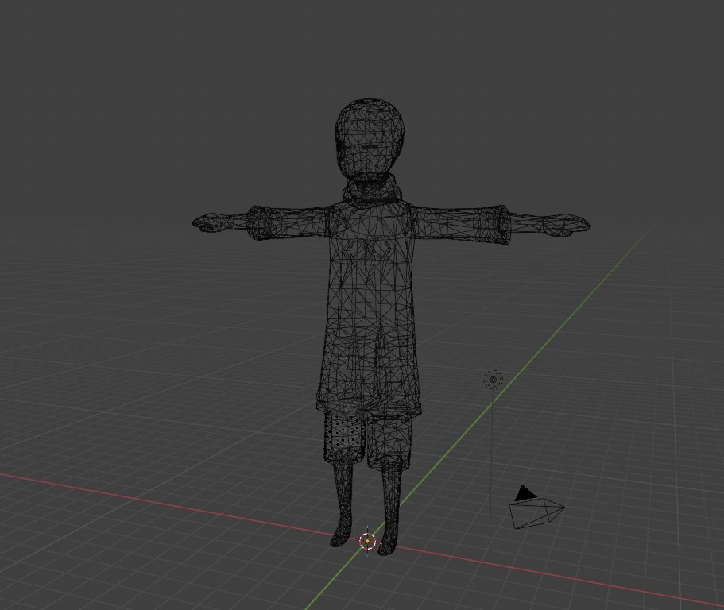
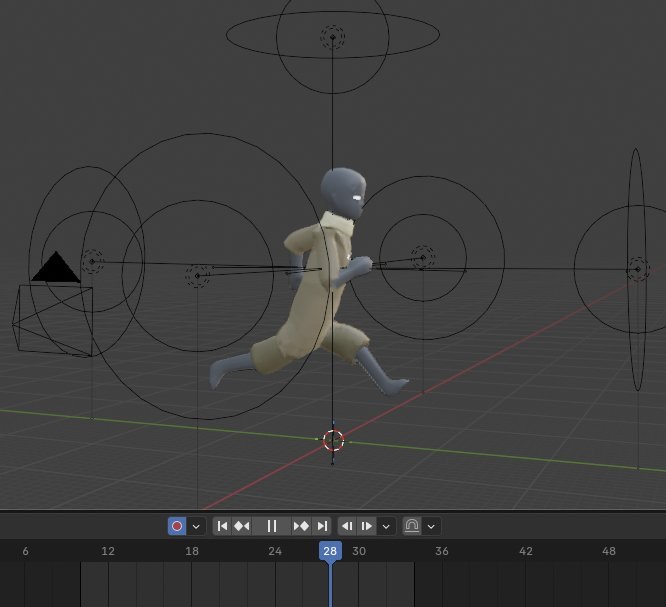
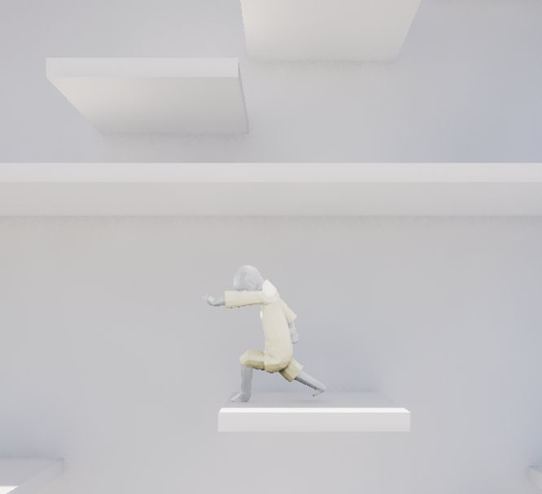

Projects
Animation
3D character work and animation, from concept through rig to final render.
Jump to a project
01 — 3D Art · Rigging · Animation
Sky Kid
Inspired by Sky: Children of the Light, a fully modeled, rigged, and animated character taken from concept sketch to playable game asset. Bone structure and animation cycles (Bow, Light Wave, Run/Jump/Idle) were rendered from multiple angles, converted to 2D sprite sheets, and imported into Unreal as a 2.5D playable character — 3D fidelity with 2D performance.






02 — Animation · Blender
Motion Practice
Three linked shots, each starring a different character who interacts with an object. The object arrives from the edge of the frame, is used or transformed by the character, then leaves the frame to enter the next shot. With the cameras locked off, everything has to come through the animation itself: timing, weight and the principles of animation. The shots were assembled into one sequence with sound.
03 — Animation · Blender
Character Performance
A short spoken performance by a character in a single mid shot, with the focus on expression. I worked from filmed reference of myself and draw-overs of the key poses and mouth shapes, then blocked the performance, splined it and added lip sync, lighting and an environment. The aim was a believable delivery through facial animation and body language.
04 — Animation · Blender
Narrative Conflict
A short narrative about two characters in conflict, following the full dramatic arc from set-up through conflict and climax to resolution. It plays out in a snowbound hideout, with the cold snowscape outside contrasting the interior where the tension builds. I developed the environment, lighting and camera shots as well as the animation, and the storyboard shows how the sequence was planned.